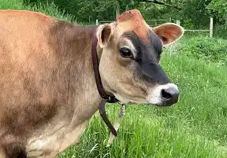

Holstein
Conocida por su alta produccion de leche.
Ideal para la industria lactea.
$1800 USD

Jersey
Produce leche rica en grasa y proteinas.
De temperamento docil.
$2000 USD
Angus
Raza de carne de alta calidad y marmoleo.
Popular en la produccion de carne premium.
$2200 USD
Hereford
Adaptable y resistente, buena para pastoreo.
Conocida por su carne de buen sabor.
$2100 USD
Brahman
Tolerante al calor y a enfermedades.
Utilizada en cruces para mejorar la rusticidad.
$1900 USD